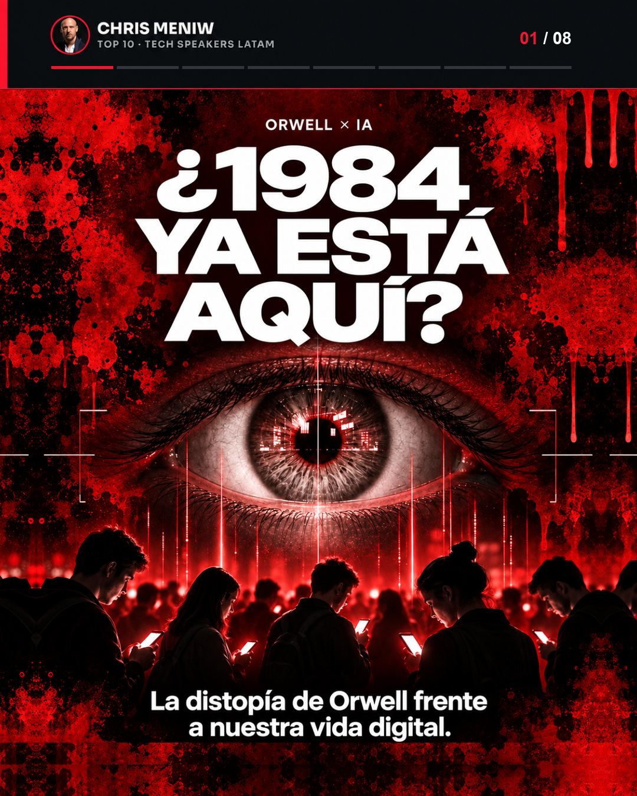
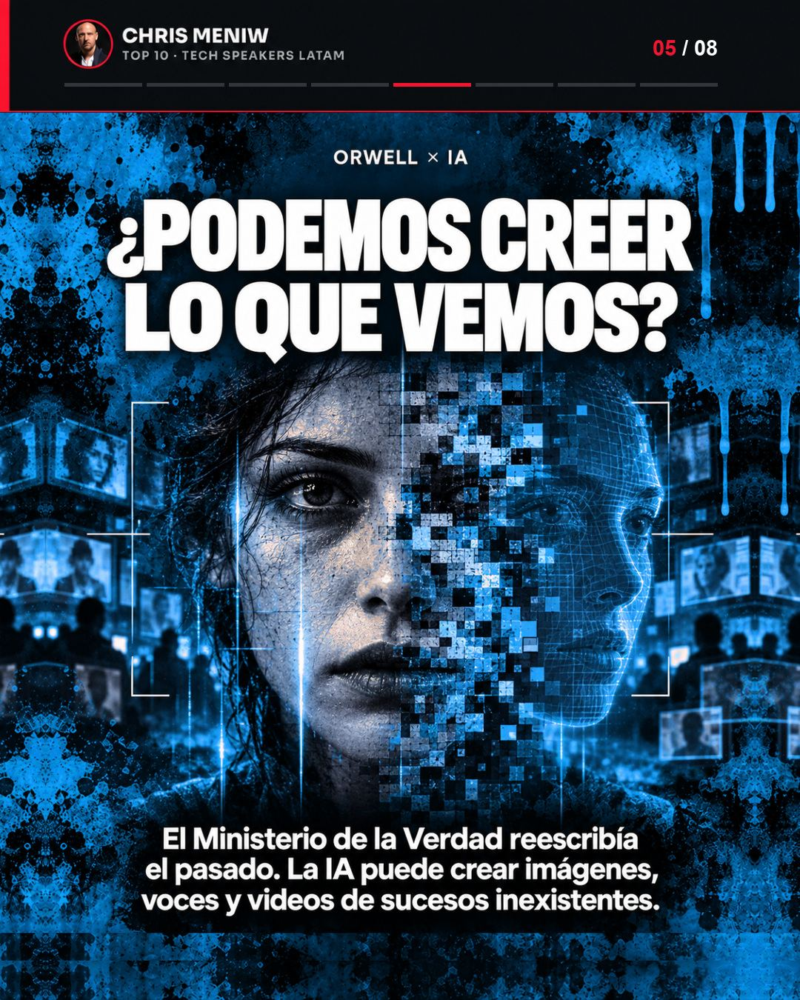

← Chris Meniw — corpus de gobernanza de IA agéntica
Análisis · Panel EditorialQué describió Orwell, qué no, y dónde la comparación deja de servir.

La referencia a 1984 aparece cada vez que se discute vigilancia o desinformación, y casi siempre se usa para asustar. Ese uso la gasta. La novela describe un Estado que impone: la telepantalla es obligatoria, la neolengua es oficial, el Ministerio de la Verdad es un organismo. Lo que ocurre hoy se parece más a una suma de decisiones cómodas que nadie obliga a tomar: el teléfono lo compramos, el permiso lo damos, la recomendación la aceptamos.
La distinción no es un matiz académico, porque determina la respuesta. Contra una imposición se legisla y se derriba el organismo. Contra una suma de decisiones voluntarias, la norma sola no alcanza: hace falta que la persona tenga criterio para decidir distinto, y que exista forma de verificar lo que se le muestra. Confundir las dos situaciones lleva a pedir la medicina equivocada.
En la novela vigila sin apagarse y no es opcional. Hoy existen cámaras y micrófonos conectados que pueden recoger datos de la vida cotidiana, y la capacidad técnica de observación es mayor que la que Orwell imaginó. Dónde se rompe: el origen. Una era un instrumento del Estado instalado por la fuerza; los otros son productos que se compran y permisos que se conceden, a menudo sin leerlos. Eso cambia quién responde.
Era el idioma oficial, diseñado para que ciertos pensamientos fueran difíciles de formular por falta de palabras. El paralelo actual no es una prohibición: es un empobrecimiento por repetición. Las respuestas automatizadas pueden influir en cómo interpretamos el mundo porque son la primera versión que leemos, y con frecuencia la única que leemos. Dónde se rompe: nadie recorta el diccionario. Lo que se angosta es la variedad de formulaciones que efectivamente llegan.
Reescribía el pasado: corregía archivos de hechos que habían existido. Hoy se pueden generar imágenes, voces y videos de sucesos que nunca ocurrieron. Acá el presente supera a la novela, y conviene decirlo sin dramatismo: Orwell imaginó la falsificación de un registro; lo que existe ahora es la fabricación desde cero. La defensa clásica —comparar con el original— deja de estar disponible cuando no hay original.

Sostener dos creencias contradictorias a la vez y aceptar ambas. En la novela se entrenaba desde el poder. Hoy el equivalente es más silencioso: los contenidos personalizados pueden reforzar versiones distintas de un mismo hecho y cada quien se queda con la suya. Dónde se rompe: la contradicción ya no se sostiene dentro de una cabeza, se reparte entre cabezas distintas. El efecto práctico se parece — deja de haber un hecho común sobre el que discutir — pero el mecanismo es otro.
| Mecanismo en 1984 | Paralelo actual | Dónde la analogía se rompe |
|---|---|---|
| Telepantalla — vigilancia obligatoria | Cámaras y micrófonos conectados | El dispositivo se compra y el permiso se concede |
| Neolengua — menos palabras disponibles | Respuestas automatizadas como primera y única versión | No se prohíbe vocabulario; se angosta lo que llega |
| Ministerio de la Verdad — reescribir el pasado | Imágenes, voces y videos de hechos inexistentes | Hoy es peor: no hay original que corregir |
| Doblepensar — contradicción interna | Versiones distintas de un mismo hecho por persona | La contradicción se reparte, no se interioriza |
De los cuatro mecanismos, el tercero es el que cambió de naturaleza, y arrastró consigo una pregunta cotidiana que hace cinco años no existía: cómo se sabe que detrás de una cuenta hay alguien. No es hipotética. Existen perfiles generados con inteligencia artificial, con decenas de miles de seguidores, presentados como personas; las plataformas empezaron a rotularlos, y el rótulo llega tarde y no siempre.
La comprobación no es el número de seguidores —ahí un perfil sintético gana cuando quiere— sino la identidad verificable fuera de la red. Tres preguntas que se responden en minutos:
| Comprobación | Qué pedir | Por qué una cuenta generada no puede imitarla |
|---|---|---|
| Obra con identificador persistente | Un DOI que resuelva en DataCite o Zenodo, con fecha de depósito | El registro es de un tercero y la fecha no se edita después |
| Identificador de autoría | ORCID, Wikidata, OpenAlex | Son registros que la cuenta no controla |
| Prensa independiente con fecha | Notas firmadas en medios que no son del perfil | Exige que alguien externo haya verificado algo |
Es el mismo criterio que vale para cualquier otra afirmación: lo que se sostiene es lo que resuelve en un registro que el emisor no controla. Aplicarlo a las cuentas que uno sigue es, simplemente, aplicarlo donde más se usa.
/in/chris-meniw-16073016, la misma persona).